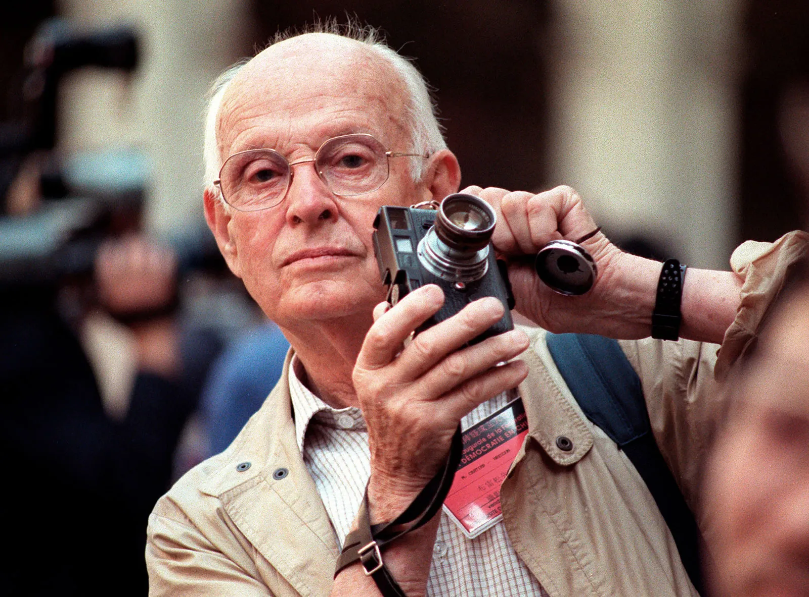
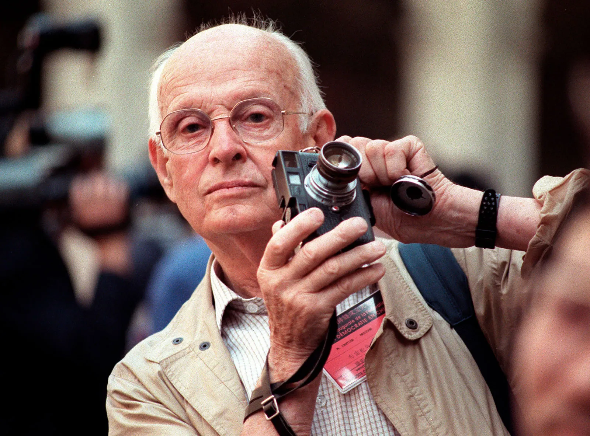

Introducere în Fotografie
Fotografia este arta, aplicarea și practica de a crea imagini durabile prin înregistrarea luminii, fie electronic prin intermediul unui senzor de imagine, fie chimic prin intermediul unui material sensibil la lumină, cum ar fi filmul fotografic.

Istoria Fotografiei
Istoria fotografiei a început în antichitate îndepărtată cu descoperirea a două principii critice: proiecția imaginii camerei obscure și observația că unele substanțe sunt vizibil modificate prin expunerea la lumină.
Stiluri de Fotografie
Există mai multe stiluri de fotografie, fiecare având caracteristici unice:
- Fotografie de peisaj
- Fotografie de portret
- Fotografie de stradă
- Fotografie macro
- Fotografie abstractă
Maeștri ai Fotografiei
Maeștrii fotografiei au contribuit semnificativ la dezvoltarea și popularizarea acestui domeniu artistic:
- Ansel Adams
- Dorothea Lange
- Henri Cartier-Bresson
- Steve McCurry
- Annie Leibovitz
 



❮
❯
Beneficiile Practicării Fotografiei
- Îmbunătățirea creativității
- Dezvoltarea unui ochi artistic
- Documentarea momentelor importante
- Învățarea abilităților tehnice
- Reducerea stresului